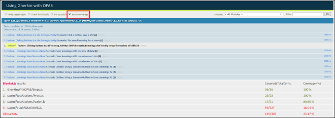

Code Coverage
It can be handy to calculate the code coverage of your integration tests, for example, to figure out whether you forgot to test something or to provide statistics on your test quality.
At test execution time, Gherkin offers the option Enable coverage at the top left of the test results. Enabling the option reruns the tests and then lists the files that were tested at the bottom of the page.

Gherkin calculates code coverage for any JavaScript file that is loaded after the test harness. This may cause some system libraries to appear in the
results. You can specify which files to calculate code coverage for by adding code to your HTML bootstrap file (after loading OpenUI5, but before running your tests), as
follows.
<script src="path/to/resources/sap/ui/qunit/qunit-coverage.js" data-sap-ui-cover-only="GherkinWithOPA5/" data-sap-ui-cover-never="sap/ui/"> </script>
For more information, see the documentation for Blanket.js on GitHub. Keep in mind that the attribute name is slightly different in the OpenUI5 implementation (data-sap-ui-cover-only instead of data-cover-only).